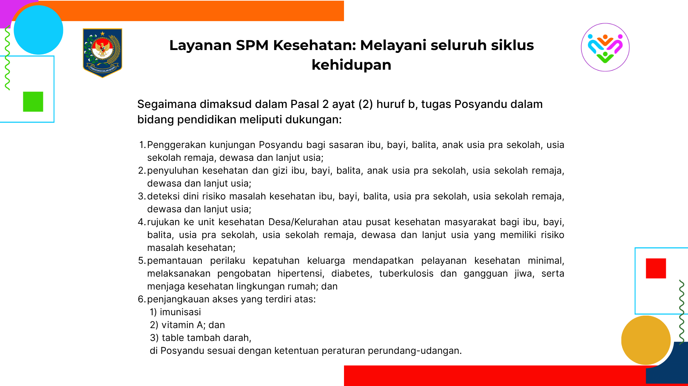

Standar Pelayanan: Kesehatan
Standar Pelayanan Minimal (SPM) bidang kesehatan di Posyandu mencakup layanan komprehensif yang melayani seluruh siklus kehidupan, mulai dari ibu hamil, bayi, balita, remaja, dewasa hingga lanjut usia. Pelaksanaannya diawali dengan penggerakan kunjungan Posyandu agar semua kelompok sasaran aktif berpartisipasi melalui sosialisasi dan ajakan langsung yang menumbuhkan kesadaran pentingnya pemeriksaan kesehatan preventif. Selanjutnya dilakukan penyuluhan kesehatan dan gizi sesuai tahap kehidupan, seperti edukasi 1000 HPK dan pencegahan stunting bagi ibu dan balita, kesehatan reproduksi dan anemia bagi remaja, serta PHBS dan pencegahan penyakit tidak menular bagi dewasa dan lansia. Posyandu juga melaksanakan deteksi dini risiko masalah kesehatan melalui pemeriksaan dasar seperti penimbangan, pengukuran tekanan darah, gula darah, dan lingkar perut untuk menemukan gangguan sejak awal. Hasil deteksi tersebut ditindaklanjuti dengan rujukan ke fasilitas kesehatan formal seperti bidan desa atau puskesmas agar mendapatkan penanganan medis yang tepat. Setelah itu, kader Posyandu berperan dalam pemantauan perilaku keluarga, memastikan kepatuhan terhadap pengobatan penyakit kronis, imunisasi, pemeriksaan kehamilan, serta penerapan PHBS di rumah tangga. Keseluruhan kegiatan ini bertujuan untuk meningkatkan derajat kesehatan masyarakat melalui pelayanan yang berkesinambungan, partisipatif, dan mencakup seluruh tahapan kehidupan.
Fokus Layanan Kesehatan
- • Penggerakan kunjungan Posyandu bagi sasaran ibu, bayi, balita, anak usia pra sekolah, usia sekolah remaja, dewasa dan lanjut usia
- • Penyuluhan kesehatan dan gizi ibu, bayi, balita, anak usia pra sekolah, usia sekolah remaja, dewasa dan lanjut usia
- • Rujukan ke unit kesehatan Desa/Kelurahan atau pusat kesehatan masyarakat bagi ibu, bayi, balita, usia pra sekolah, usia sekolah remaja, dewasa dan lanjut usia yang memiliki resiko masalah kesehatan
- • Pemantauan perilaku kepatuhan keluarga mendapatkan pelayanan kesehatan minimal, melaksanakan pengobatan hipertensi, diabetes, tuberculosis dan gangguan jiwa, serta menjaga kesehatan lingkungan rumah
- • Deteksi dini resiko masalah kesehatan ibu, bayi, balita, usia pra sekolah, usia sekolah remaja, dewasa dan lanjut usia
Jika ada pertanyaan lebih lanjut atau menemukan pelayanan yang tidak sesuai standar, silakan sampaikan pengaduan Anda melalui tombol di bawah ini.